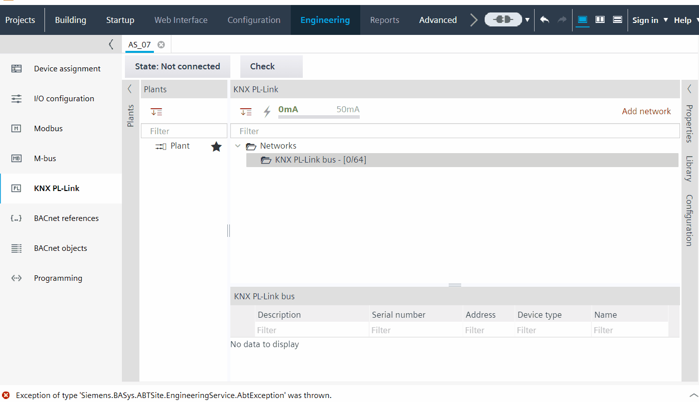

AQR2570 和 AQR2576 传感器的前端模块显示屏

- You want to view the front module display of the AQR2570 and AQR2576 sensors.
- Go to Building > Building structure.
- Right-click a configured device and select Go to engineering.
- Open the KNX PL-Link task.
- Open the Library tab and expand Field devices > KNX PL-Link folder.
- Drag the AQR2570 and AQR2576 sensors and drop them to the network.
- Go to the Configuration tab.
- A display view can be seen in the Configuration tab.
- Click Front module value.
- Expand the drop-down list in the Front module value.
- Click AQR2530, front module, empty to see an empty display.
- Click AQR2532, temperature to see the temperature symbol in the display.
- Click AQR2535, temp., rel. humidity to see the temperature and relative humidity symbol in the display.
- The corresponding temperature and humidity values will reflect below the Front module value.